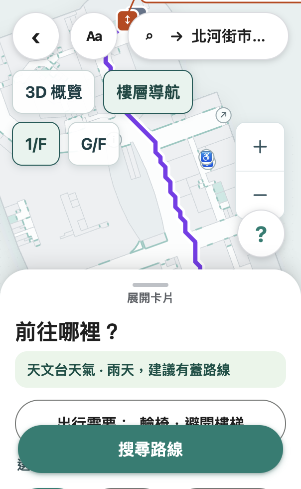
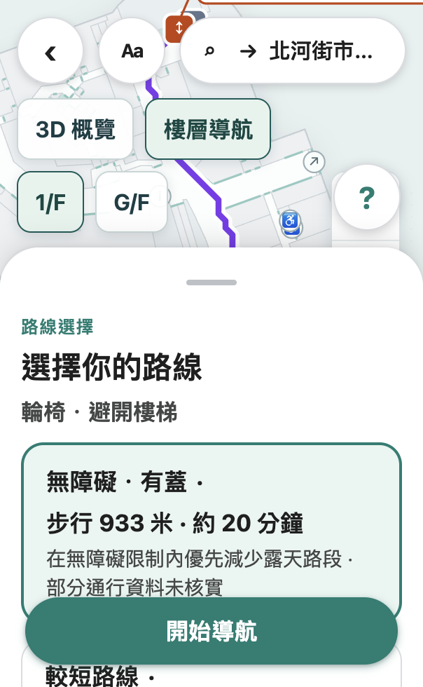
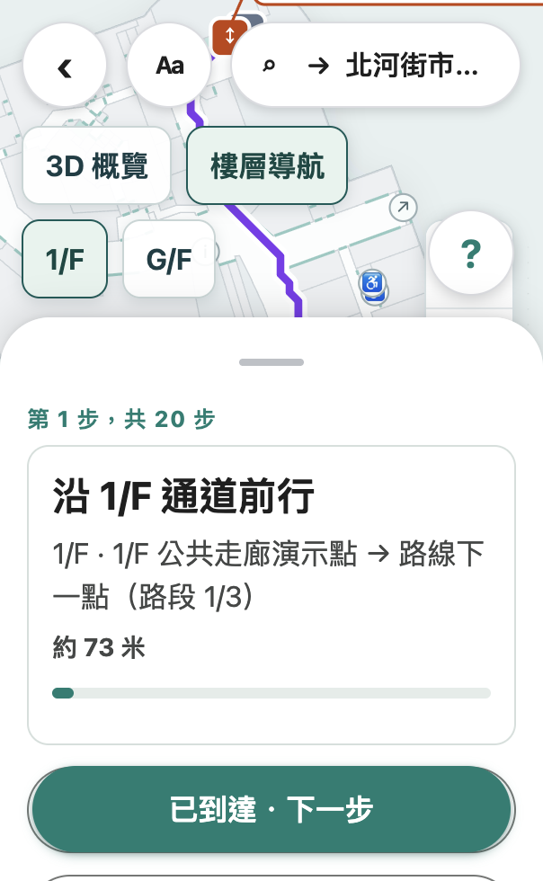

Current demo edition · English

This comparison uses the supplied AccessRoute HK Product Manual PDF and the current repository's product-manual parity audit. “Changed” means the current project documents or implements a difference; it does not imply every earlier feature was new or has been independently field-tested.
| Area | Current change or clarification | Status |
|---|---|---|
| Starting screen | The regular app entry now opens a map-first journey flow: choose places, set mobility needs, compare a route, then navigate or request help. The earlier full planning workspace remains available at /?legacy=1. | Changed |
| Mobility setup | The current map-card flow exposes five profiles (walking, wheelchair, elderly, stroller and heavy luggage) and additional caregiver controls for lifts, stairs/escalators, slope, pace and route goal. | Expanded |
| Weather | Weather can use Hong Kong Observatory open data. The service reports whether a result is live or a previously cached stale snapshot; territory-wide weather is not precise local forecasting. | Updated |
| Accessibility evidence | Route information is more explicit that many source accessibility attributes remain unknown. A “verified routes only” option can exclude unknown segments; a route result is not an accessibility certification. | Clarified |
| Accessibility of the interface | The project now includes skip navigation, visible keyboard focus, larger touch targets, reduced-motion handling and high-contrast support in relevant views. | Improved |
| AI assistance | Text preferences, photo obstacle reports, photo location help and generated guidance are presented as separate workflows. Real provider calls and real-world recognition quality are not certified by UI or mock tests. | Clarified |
| End-to-end claims | The exact 13-step journey in the old manual and its accuracy targets have not been independently reproduced. Live indoor positioning, live MTR accessibility and full phone/operator integration remain out of scope or partial. | Important limitation |
The app still includes 12 selectable scenes, map views, route calculation and demo elevator events. These are not listed as new changes because the supplied manual already describes overlapping capabilities.
Many core planning and map functions are available, but the newest app does not fully match the old manual. This table checks the manual's named workflows against the current project audit. “Partial” means a demo path exists but a dependency, exact workflow, live service or real-device result is not verified.
| Old-manual function | Current status | What works / what does not |
|---|---|---|
| Choose and swap places in the 12-scene catalogue | Available | Places are independently selectable; local routes recalculate when changed or swapped. |
| Caregiver defaults, profiles and passage limits | Partial | Profiles and several lift/stair/slope/route settings feed local routing. Settings are browser-local, not shared across accounts; the old 1 m minimum-width example is not verified as a current control. |
| Continuous walk → rail → walk journey and exactly 13 steps | Partial | Walking legs can be composed with a saved MTR station sequence and transfer instructions. Timetables/accessibility data are not live, and the old exact 13-step route is not reproduced (current default can produce 14 or more steps). |
| Maps, current/next step, step completion and accessible routing | Partial | Floor/overview maps and user-advanced steps work. There is no live indoor position, and graph accessibility facts remain incomplete or unknown. |
| Three Kowloon Tong branches: outdoor, mall A and mall B | Unavailable | These manual-specific branches are deferred because verified branch endpoints/topology are unavailable. Do not rely on their old distances. |
| Report a lift problem and reroute | Partial | Demo facility closure/restoration can reroute the remaining graph path. The full live photo-to-AI matching flow and real operator alert are not verified. |
| Wait for a lift, restore it and resume with an operator | Partial | Local session/operator controls and update streaming exist. Production authentication and multi-process synchronization are not in place. |
| Find a location from a landmark photo | Mock-only verification | A mocked candidate can be previewed, confirmed and applied. Real photo recognition and GPS matching are not verified. |
The statuses below distinguish a local interface or code path from an available, measured external service.
| Old-manual function | Current status | What works / what does not |
|---|---|---|
| HKO weather and sheltered-route changes | Partial | The backend reads HKO feeds and identifies live/stale data; location can be territory-wide or approximate. Device accuracy and sustained live operation are not certified. |
| Nearby Street View panorama | Unavailable | No Street View provider or panorama endpoint is implemented. |
| Natural-language preferences | Partial | A review/apply workflow exists. Live language parsing requires a configured model provider and has not been benchmarked. |
| Cantonese voice input | Partial | Press-to-speak is available in browsers that expose Web Speech API; actual microphone/service behavior has not been device-tested. |
| Automatic Cantonese narration | Locally implemented | Browser speech synthesis can read active steps if the device has a Hong Kong Cantonese voice; physical-device output is unverified. |
| GenAI accuracy, workflow success and cost targets | Not measured | The old manual's percentages and token-cost figures are targets/examples, not current measured results. |
| WCAG conformance and assistive-technology use | Not certified | Keyboard, focus, contrast and responsive checks have improved; full WCAG conformance and VoiceOver/TalkBack use have not been verified. |
npm ci npm run dev
On later visits, run npm run dev and reopen the address. Stop the demo with Ctrl+C in the terminal.
Route planning works without an AI key. To enable the Qwen workflows, copy .env.example to .env, set your private DASHSCOPE_API_KEY in that local file, then restart the demo. Never paste the key into the browser or share it in screenshots.
DASHSCOPE_API_KEY=your_private_key
npm run build, then npm start and open http://127.0.0.1:8787/map-demo/index.html.Use the overview map for the surrounding route and the floor-navigation view for indoor floor geometry. Use the floor controls and map zoom controls to inspect a level. Follow the displayed route segments, but treat every path as a demo unless verified independently.


Use the ? help control for facility or location assistance. Travel preferences are entered in the planning sheet. Depending on the workflow, Qwen requires a configured backend; review any proposed match or route change before applying it:
When the backend is running and weather data is available, the app can show Hong Kong Observatory observations, forecast and warning data. Check its live/stale indicator and update time. Territory-wide readings may not reflect conditions at your current street or building.